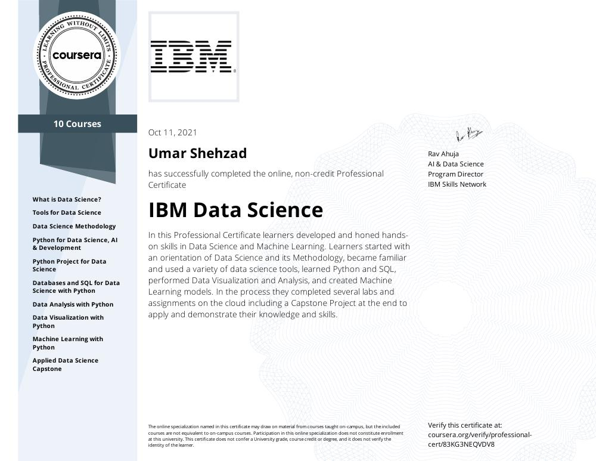

SpaceX Falcon 9 Landing Prediction
Applied Data Science Capstone project.
Explore project →11 October 2021 · 10 courses · Online, non-credit programme
Applied data science methodology, Python and SQL, visualisation and machine learning.
Official course titles listed on the awarded certificate.
Applied Data Science Capstone project.
Explore project →Credential ID: 83KG3NEQVDV8
Open PDF ↗Download PDFVerify credential ↗
If the embedded PDF is unavailable, use Open PDF above.